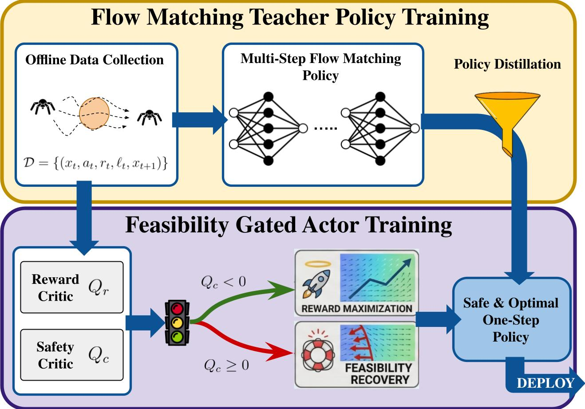
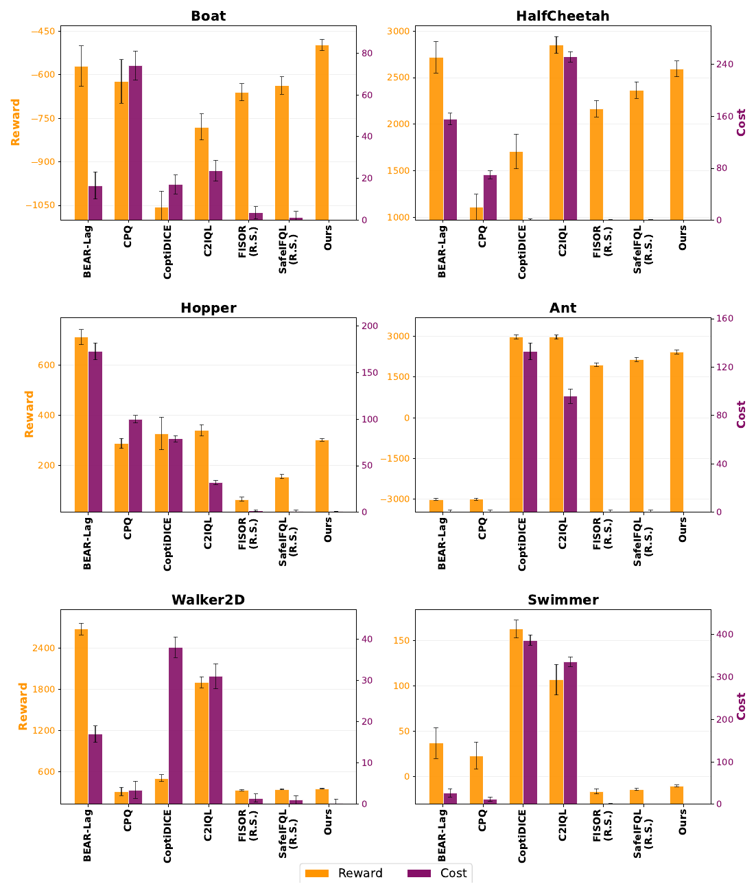
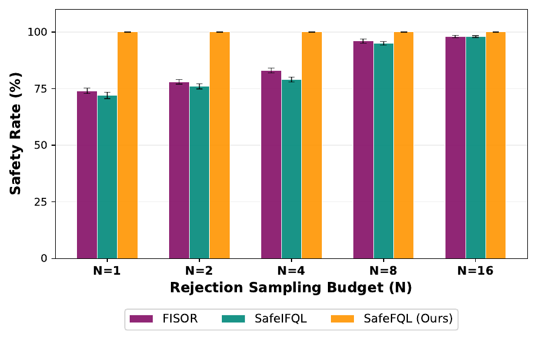
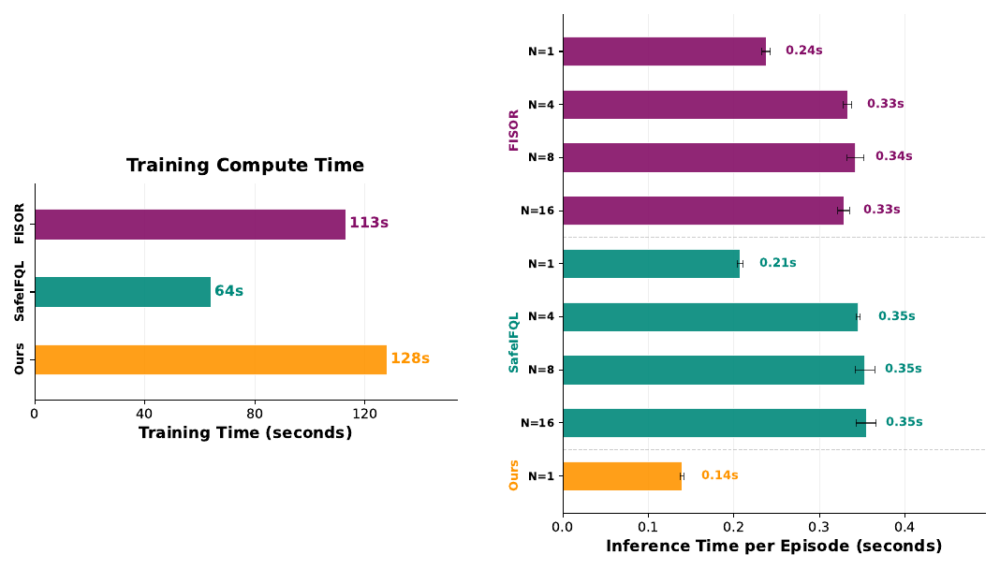

Safe Flow Q-Learning
Offline Safe Reinforcement Learning with Reachability-Based Flow Policies
Offline Safe Reinforcement Learning with Reachability-Based Flow Policies

Offline safe RL asks for a reward-maximizing policy from a fixed dataset $\mathcal{D} = \{(x_t, a_t, r_t, \ell_t, x_{t+1})\}$, under a constraint that must hold at every timestep. With a failure set $\mathcal{F} = \{x : \ell(x) > 0\}$, the objective is
$$ \sup_{\pi}\ \Big[\sum_{k=0}^{\infty} \gamma^k r(x_k)\ \Big|\ x_0 = x\Big] \qquad \text{s.t.}\quad x_t \notin \mathcal{F},\ \ \forall t \ge 0 . $$This is a state-wise hard constraint, and two standard families of methods struggle with it for different reasons.
Soft-cost methods lose the guarantee. Lagrangian and cost-budget approaches (CPQ, COptiDICE, C2IQL, BEAR-Lag) constrain $\mathbb{E}[\sum_t \gamma^t c(x_t)] \le l$. Satisfying a constraint in expectation is not the same as never entering $\mathcal{F}$, the threshold $l$ becomes a per-task hyperparameter, and safety-critical transitions are rare in static datasets — exactly where the reward/safety trade-off is most brittle.
Generative safe policies pay for it at inference. Diffusion- and flow-based policies (FISOR, SafeIFQL) capture multimodal behavior well, but sampling costs $O(T)$ network evaluations per action, and in practice they need rejection sampling over $N$ candidates to reliably land on a safe, high-value action. That is $O(NT)$ forward passes inside a real-time control loop. Training a flow policy with RL directly is not a fix either: it requires backpropagating through the entire iterative generation process.
SafeFQL keeps the decoupling principle of Flow Q-Learning — critics, behavior model, and deployed actor each trained by their own objective — and extends it with a second critic whose semantics are governed by worst-case reachability rather than cumulative discounted cost.
Instead of a cumulative cost Q-function, $Q_c$ approximates the Hamilton–Jacobi feasibility value $V^*_\ell(x_0) = \min_\pi \max_{t \ge 0} \ell(x_t)$ through a max-backup Bellman recursion:
$$ y_c(x, a, x') = \max\big\{\, \ell(x),\ \gamma\, \bar V_c(x') \,\big\}. $$Taking the maximum — rather than a sum — propagates the worst safety margin at any future time backwards to the present. So $Q_c(x,a) < 0$ means not just "$x$ is safe now" but "the predicted future evolution stays safe too", and $Q_c(x,a) \ge 0$ predicts eventual entry into $\mathcal{F}$. Because the backup is a max, pessimism has to be applied consistently: SafeFQL uses two safety Q-networks and takes $\bar V_c(x') = \max\{Q_c^{(1)}, Q_c^{(2)}\}$, avoiding overoptimistic feasibility estimates at out-of-distribution next states.
A conditional flow-matching model $\mu_\theta$ is trained purely by behavioral cloning — no critic signal enters its loss, which keeps that stage unconditionally stable. A deterministic one-step actor $\mu_\omega(x, z)$ is then distilled from it, $\mathcal{L}_{\text{distill}}(\omega) = \mathbb{E}\big[\|\mu_\omega(x,z) - \bar\mu_\theta(x,z)\|_2^2\big]$, which doubles as a behavior regularizer anchoring the actor to the dataset support. The one-step actor is the only component queried at deployment.
The natural baseline adds a Lagrangian penalty, $-Q_r + \eta \max(0, Q_c)$. The two terms are commensurate in magnitude, so near the feasibility boundary a large reward gradient can simply outvote the safety term — and the right $\eta$ is not knowable without online interaction. SafeFQL instead enforces strict priority with a binary gate $\zeta(x,z) = \mathbb{I}\{Q_c(x, \mu_\omega(x,z)) < 0\}$:
$$ \mathcal{L}_{\text{actor}}(\omega) = \lambda \mathcal{L}_{\text{distill}}(\omega) + \mathbb{E}_{(x,z)}\Big[\underbrace{\zeta \cdot \big(-Q_r(x, a_\omega)\big)}_{\text{feasible: maximize reward}} + \underbrace{(1-\zeta) \cdot \max\big(0, Q_c(x, a_\omega)\big)}_{\text{infeasible: recover feasibility}}\Big]. $$The two objectives are mutually exclusive by construction, so reward and safety gradients are never active in opposing directions at the same state. The distillation term stays on in both regimes as a universal behavioral anchor.
Training runs in three sequentially dependent phases; within each phase all networks train in parallel to convergence.
Phase 1 — Critic learning. Reward critics $(Q_r, V_r)$ follow IQL: $V_r$ is fit with the expectile loss $\mathcal{L}_\tau(u) = |\tau - \mathbb{I}(u<0)|u^2$ against in-sample Q-values, and $Q_r$ regresses onto $y_r = r + \gamma \bar V_r(x')$. The safety pair $(Q_c, V_c)$ uses the same expectile machinery on the safety residual, but with $\tau < 0.5$ so $V_c$ tracks the lower quantile — a conservative approximation of the feasibility boundary — and with the max-backup target $y_c$ above. Target networks are updated by EMA. All critic learning stays inside the support of $\mathcal{D}$, so no out-of-distribution action queries are needed.
Phase 2 — Flow teacher. Given $x \sim \mathcal{D}$, $z \sim \mathcal{N}(0,I)$, $t \sim \mathcal{U}[0,1]$ and the straight-line interpolant $x_t = (1-t)z + ta$, the velocity field is trained by regression: $\mathcal{L}_{\text{flow}}(\theta) = \mathbb{E}\big[\|\mu_\theta(x, x_t, t) - (a - z)\|_2^2\big]$.
Phase 3 — Feasibility-gated actor. Each step samples $(x, z) \sim \mathcal{D} \times \mathcal{N}(0,I)$, computes $a_\omega = \mu_\omega(x,z)$, evaluates the gate $\zeta$, and minimizes $\mathcal{L}_{\text{actor}}$. A fresh $z$ per step gives the induced stochastic policy $\pi_\omega$ coverage of the action distribution, avoiding mode collapse under the distillation constraint — no replay buffer of policy actions is required.
Safe Boat Navigation is a custom 2D collision-avoidance task: a point-mass boat crosses a river whose drift velocity varies with the $y$-coordinate, and must bypass obstacles despite that drift. Safety Gymnasium covers the Safe Velocity suite on Hopper, HalfCheetah, Swimmer, Walker2D and Ant, where the agent maximizes reward while holding its speed below a threshold; these use the standard DSRL datasets. Every method is evaluated from a fixed set of 500 randomly sampled safe initial states per environment, across 5 seeds.
Baselines span both families discussed above: constrained offline RL (BEAR-Lag, CPQ, COptiDICE, C2IQL) and safe generative policies (FISOR, SafeIFQL), the latter evaluated with rejection sampling at $N = 16$.

On Safe Boat Navigation, SafeFQL improves reward over all baselines while maintaining zero violations across evaluation episodes. The pattern holds on the high-dimensional Safety Gymnasium tasks: near-zero cost with reward competitive against methods that achieve it only by violating constraints. Expected-cost baselines split into two failure modes — BEAR-Lag, CPQ and COptiDICE sacrifice reward without strictly enforcing safety, while C2IQL earns high reward at inconsistent cost.

This is the practical consequence of the design: FISOR and SafeIFQL do account for worst-case safety, but they never learn a single optimal action — they generate candidates and filter. SafeFQL emits the action directly.

Even at $N = 1$, FISOR and SafeIFQL remain at 0.21–0.24s, because the multi-step denoising or integration process persists whether or not rejection sampling is enabled. SafeFQL's one-time training overhead buys a policy that fits inside a high-frequency real-time control loop.
The gate $\zeta$ is a hard indicator over the safety critic, which can in principle produce a non-smooth loss landscape and occasionally affect training stability. Continuous masking functions or soft Lagrangian relaxations are a natural refinement, at the cost of reintroducing hyperparameters that need tuning. SafeFQL is evaluated in the offline setting and does not claim online-training safety guarantees.
@article{tayal2026safe,
title={Safe Flow Q-Learning: Offline Safe Reinforcement Learning
with Reachability-Based Flow Policies},
author={Mumuksh Tayal and Manan Tayal and Ravi Prakash},
journal={Reinforcement Learning Journal},
volume={7},
year={2026}
}